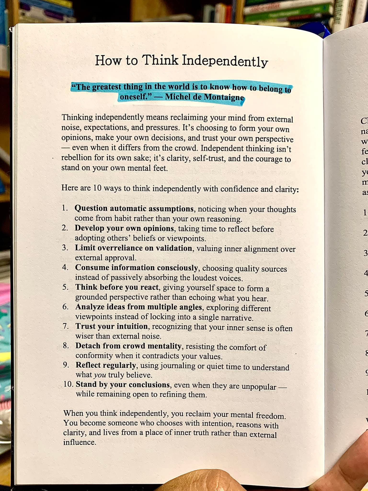

Hujan turun bagai tirai abu-abu yang menutupi punggung bukit Dago Pakar, Kota Bandung. Udara dingin menyelinap masuk melalui celah jendela kayu sebuah kedai kopi artisan yang tersembunyi dari hiruk-pikuk jalan utama. Di salah satu sudut yang diterangi lampu temaram berwarna keemasan, duduk seorang perempuan dengan kemeja flanel berpotongan rapi. Namanya Risa. Di hadapannya, berserakan kertas cetak biru arsitektur, sebuah tablet yang menyala menampilkan angka-angka anggaran, dan secangkir kopi V60 Java Preanger yang asapnya mulai tipis.
Risa adalah seorang arsitek muda yang karirnya sedang meroket di salah satu firma terbesar di Jakarta, namun hatinya selalu tertambat pada ketenangan Bandung. Hari ini, ia kembali ke kota kembang bukan sekadar untuk melepas rindu, melainkan untuk melarikan diri dari sebuah keputusan besar yang menyesakkan dadanya. Firma tempatnya bekerja baru saja memenangkan tender raksasa: sebuah mega-kompleks komersial yang akan menggusur salah satu kawasan cagar budaya yang paling bersejarah di pusat kota Bandung. Risa ditunjuk sebagai kepala desain proyek tersebut.
Secara finansial dan prestise, itu adalah lompatan karir yang diimpikan ribuan arsitek seangkatannya. Namun, jauh di lubuk hatinya, ada suara penolakan yang gigih. Suara yang menyuruhnya untuk tidak menjadi bagian dari mesin penghancur memori kolektif kota demi beton dan kaca-kaca kapitalisme.
Lonceng pintu kedai bergemerincing pelan, memecah lamunannya. Dua pria melangkah masuk sambil mengibas-ngibaskan payung dan jaket mereka yang terkena tempias hujan. Mereka adalah Baskara dan Dimas, dua sahabat Risa sejak masa kuliah di kampus teknik terkemuka di utara Bandung. Persahabatan tiga kepala yang selalu diwarnai perdebatan intelektual yang tak berujung.
Baskara, dengan kacamata berbingkai kotak dan kemeja polo yang selalu dimasukkan rapi, adalah seorang ilmuwan data yang bekerja di sebuah perusahaan teknologi multinasional. Hidupnya berakar pada statistik, probabilitas, dan konsensus mayoritas. Di sebelahnya, Dimas tampak kontras. Rambutnya sedikit gondrong, mengenakan jaket kanvas usang, dan di tangannya selalu tergenggam buku tua. Dimas adalah seorang dosen sosiologi urban dan penulis lepas yang kerap mengkritik kebijakan tata kota melalui esai-esainya yang tajam.
Baskara: "Cuaca Bandung kalau sedang melankolis begini memang tidak ada duanya, ya. Tapi melihat wajahmu yang lebih mendung dari langit di luar, sepertinya angka-angka di tabletmu itu tidak sedang bersahabat."
Risa: "Bukan angkanya, Bas. Angkanya justru terlalu fantastis. Sangat fantastis sampai-sampai membuatku muak."
Dimas: (Tersenyum tipis sambil menarik kursi kayu) "Biar kutebak. Proyek komersial di jalan bersejarah itu? Berita tentang firma-mu yang memenangkan tender sudah mulai bocor di kalangan aktivis tata kota. Dan kau, sang bintang baru, tentu saja berada di pusaran badainya."
Risa menghela napas panjang, menyandarkan punggungnya ke kursi rotan. Ia menatap kedua sahabatnya dengan sorot mata lelah. Selama berminggu-minggu, ia merasa seperti hidup dalam kepala orang lain. Atasannya terus mencekokinya dengan narasi tentang 'kemajuan' dan 'modernisasi'. Teman-teman sejawatnya membanjirinya dengan ucapan selamat dan rasa iri yang tak disembunyikan. Keluarga besarnya pun sudah mulai membanggakan namanya di setiap arisan keluarga. Kebisingan eksternal itu begitu riuh, hingga ia tak lagi bisa mendengar suaranya sendiri.
Baskara: "Ris, cobalah berpikir rasional. Ini kesempatan langka. Portofoliomu akan meroket tajam. Kalau kau menolak, firma pasti akan memberikan posisi itu kepada arsitek lain yang mungkin lebih tidak peduli pada nilai sejarah. Setidaknya, jika kau yang memegang kendali, kau bisa menyelipkan sedikit elemen kompromi. Mengapa kau harus melawan arus mayoritas yang jelas-jelas menguntungkanmu?"
Argumen Baskara adalah cerminan sempurna dari pragmatisme urban masa kini. Ia selalu percaya bahwa keputusan terbaik adalah keputusan yang paling banyak divalidasi oleh lingkungan sekitar dan menjanjikan probabilitas kesuksesan finansial tertinggi. Mengikuti kerumunan adalah insting bertahan hidup yang paling purba bagi manusia modern.
Dimas, yang sedari tadi hanya mendengarkan sambil memesan secangkir teh chamomile, meletakkan buku yang sedari tadi dibawanya ke atas meja. Buku itu tampak tidak terlalu tebal, namun sampulnya memancarkan aura kebijaksanaan yang sunyi. Ia menatap Risa dengan tatapan yang menembus segala keraguan perempuan itu.
Dimas: "Masalahnya dengan mengikuti arus mayoritas adalah, kau seringkali berakhir di tempat yang sama sekali tidak kau tuju, Bas. Risa tidak sedang bermasalah dengan kalkulasi karir. Ia sedang bertarung dengan otentisitas dirinya. Ia sedang dijajah oleh ekspektasi dan tekanan dari luar."
Dimas membalik halaman buku yang dibawanya, berhenti pada sebuah halaman yang telah ditandai dengan stabilo biru muda. Risa mencondongkan tubuhnya untuk melihat apa yang sedang ditunjukkan oleh Dimas. Di atas kertas yang sedikit menguning itu, tertera sebuah judul: How to Think Independently.

Mata Risa tertuju pada baris pertama yang disorot terang. Sebuah kutipan dari filsuf besar era Renaisans Perancis yang seolah menampar kesadarannya di sore yang dingin itu.
— Michel de Montaigne
Kalimat itu bergema di ruang pikirannya. Mengetahui bagaimana menjadi milik diri sendiri. Betapa sulitnya hal itu dilakukan di zaman di mana segala hal diukur dari jumlah validasi, persetujuan atasan, dan tepuk tangan orang banyak. Risa menyadari bahwa selama ini, pikirannya telah disita oleh kebisingan luar. Ia tidak lagi memikirkan apa yang ia inginkan, melainkan apa yang orang lain harapkan darinya.
Dimas menyesap tehnya perlahan, membiarkan keheningan mengambil alih sejenak, membiarkan Risa meresapi makna dari halaman buku tersebut. Suara hujan yang berderai di luar jendela kini terasa seperti simfoni yang menenangkan, mengisolasi mereka bertiga dalam gelembung percakapan yang intim dan filosofis.
Dimas: "Coba kau baca sepuluh poin di bawah kutipan itu, Ris. Berpikir independen itu bukan berarti kau harus menjadi pemberontak yang selalu melawan arus hanya demi terlihat berbeda. Bukan itu intinya. Berpikir independen adalah tentang kejelasan, kepercayaan diri, dan keberanian untuk berdiri di atas kaki mentalmu sendiri."
Baskara: (Menyela dengan nada skeptis) "Itu teori yang indah di atas kertas, Dim. Tapi di dunia nyata, kapitalisme tidak peduli pada kaki mentalmu. Kalau Risa menolak, karirnya bisa mandek. Bukankah lebih baik kita menyesuaikan diri dengan realitas? Asumsi umum mengatakan bahwa proyek besar adalah batu loncatan. Kenapa harus dipertanyakan lagi?"
Risa: "Itu dia poin pertamanya, Bas. Question automatic assumptions. Mempertanyakan asumsi-asumsi otomatis. Aku selama ini mengasumsikan bahwa menolak proyek ini sama dengan bunuh diri karir, karena itulah yang dinarasikan oleh industri. Tapi, apakah benar begitu? Atau itu hanya ketakutan yang ditanamkan oleh kebiasaan industri yang rakus?"
Perdebatan mulai menghangat. Kedai kopi yang sepi itu kini menjadi arena pergulatan ide. Baskara mewakili pragmatisme korporat, Dimas mewakili idealisme dan kebebasan berpikir, sementara Risa adalah medan pertempuran di mana kedua kutub itu saling tarik-menarik. Namun, semakin Risa membaca poin-poin dalam buku yang dibawa Dimas, semakin terang jalan di hadapannya.
Poin kedua, Develop your own opinions. Mengembangkan opini sendiri dengan meluangkan waktu untuk berefleksi sebelum mengadopsi pandangan orang lain. Risa menyadari bahwa sejak tender itu diumumkan, ia belum benar-benar mengambil jeda. Ia terus-menerus dijejali dengan briefing, rapat, dan email-email euforia. Ia belum duduk diam untuk bertanya pada dirinya sendiri: Sebagai seorang arsitek, warisan seperti apa yang ingin ia tinggalkan untuk kotanya?
Risa: "Selama dua minggu ini, aku terlalu bergantung pada validasi atasanku. Poin ketiga buku ini benar-benar menusukku. Limit overreliance on validation. Aku merasa tersanjung ketika direktur utama memujiku sebagai 'masa depan perusahaan'. Aku menukar keselarasan batinku hanya demi persetujuan eksternal."
Baskara: "Tapi validasi itu penting, Ris. Itu parameter kesuksesan kita di mata masyarakat."
Dimas: "Parameter siapa, Bas? Media? Kerumunan? Poin keempat dan kelima, Risa. Consume information consciously dan Think before you react. Jangan secara pasif menyerap suara-suara paling keras di ruangan. Firma-mu tentu saja menjadi suara paling keras saat ini. Beri dirimu ruang untuk membentuk perspektif yang membumi. Jangan hanya menggema apa yang kau dengar."
Hujan di luar perlahan mulai mereda, menyisakan rintik-rintik halus dan aroma petrichor yang pekat—aroma tanah basah yang selalu berhasil membangkitkan kenangan Risa akan masa kecilnya di Bandung, bermain di sekitar gedung-gedung art deco peninggalan kolonial yang kini terancam diratakan dengan tanah demi mal berlantai lima belas yang dingin dan tanpa jiwa.
Risa mengambil napas dalam-dalam. Matanya kini menelusuri poin keenam hingga kedelapan. Analyze ideas from multiple angles, Trust your intuition, dan Detach from crowd mentality. Tiga poin ini seolah membentuk sebuah anak tangga yang membawanya keluar dari lubang keraguan. Ia telah menganalisis proyek ini dari sudut pandang finansial dan ambisi perusahaan, dan hasilnya memang menggiurkan. Namun, ketika ia menganalisisnya dari sudut pandang sejarah, memori kolektif warga kota, dan integritas desain, proyek itu adalah sebuah kejahatan kultural.
Risa: "Intuisiku sejak awal mengatakan ada yang salah. Setiap kali aku menggoreskan stylus di layar tablet untuk merancang struktur penghancuran fasad bangunan lama itu, perutku terasa mual. Bukankah intuisi seringkali lebih bijak daripada kebisingan dari luar? Intuisi itu merangkum semua nilai, prinsip, dan pengetahuan yang kita kumpulkan sepanjang hidup secara tak sadar."
Dimas: "Tepat. Dan untuk mengikuti intuisi itu, kau harus berani melepaskan diri dari mentalitas kerumunan. Menolak kenyamanan sebuah konformitas ketika hal itu bertentangan dengan nilai-nilaimu. Kau harus melawan gravitasi sosial yang memaksamu untuk menjadi sama dengan arsitek-arsitek robotik lainnya."
Baskara: (Mengusap wajahnya dengan kedua tangan, perlahan nada suaranya melembut) "Kalau kau memang seyakin itu, Ris... lalu apa langkahmu selanjutnya? Kau tahu konsekuensinya, kan? Kau bisa kehilangan posisimu. Poin kesepuluh dari daftar itu, Stand by your conclusions, itu menuntut harga yang sangat mahal."
Keheningan kembali menyelimuti meja mereka. Kali ini bukan keheningan yang dipenuhi keraguan, melainkan keheningan dari sebuah kristalisasi pemikiran. Poin kesembilan menyarankan untuk melakukan refleksi secara teratur, melalui journaling atau waktu tenang untuk memahami apa yang benar-benar diyakini. Sore itu, di kedai kopi yang tersembunyi di Dago, perbincangan dengan dua sahabatnya telah menjadi sesi refleksi yang paling jujur bagi Risa.
Ia menatap kembali ke arah gambar di buku Dimas. Kalimat penutup di bagian bawah halaman itu seolah menjadi konklusi dari seluruh pergulatan batinnya selama ini: When you think independently, you reclaim your mental freedom. You become someone who chooses with intention, reasons with clarity, and lives from a place of inner truth rather than external influence.
Ketika seseorang berpikir secara independen, ia merebut kembali kebebasan mentalnya. Ia tidak lagi menjadi pion yang digerakkan oleh tren, ekspektasi, atau ketakutan. Ia menjadi manusia seutuhnya yang memilih dengan niat, bernalar dengan kejernihan, dan hidup dari tempat di mana kebenaran batin bersemayam, bukan dari pengaruh luar.
Senja perlahan turun mewarnai langit Bandung dengan semburat jingga keunguan. Lampu-lampu kota mulai menyala satu per satu, berkelap-kelip di kejauhan seperti jutaan bintang yang jatuh ke lembah. Risa mematikan layar tabletnya. Ia merapikan kertas-kertas cetak biru itu, melipatnya dengan rapi, namun kali ini bukan dengan niat untuk melanjutkannya, melainkan untuk mengembalikannya.
Risa: "Aku sudah memutuskan."
Baskara: "Dan keputusanmu adalah... berdiri pada kesimpulanmu, betapapun tidak populernya itu?"
Risa: (Tersenyum lepas, sebuah senyum yang sudah lama tidak terlihat di wajahnya) "Ya. Aku akan kembali ke Jakarta besok pagi. Aku akan menemui direksi dan menyatakan mundur dari proyek tersebut. Jika mereka memaksaku, aku akan mengundurkan diri dari firma."
Dimas: "Itu langkah yang sangat berani, Ris. Kau tidak takut dengan masa depanmu?"
Risa: "Tentu saja ada rasa takut. Poin kesepuluh juga mengatakan, while remaining open to refining them. Aku tetap terbuka pada segala kemungkinan ke depan. Mungkin aku akan mendirikan studio kecilku sendiri di sini, di Bandung. Studio yang merancang bangunan tanpa menghancurkan kenangan. Yang pasti, saat ini, untuk pertama kalinya dalam berminggu-minggu, aku merasa kembali menjadi diriku sendiri. Aku telah merebut kembali kebebasan mentalku."
Baskara terdiam sejenak. Sang ilmuwan data yang selalu berpegang pada probabilitas itu akhirnya mengulas senyum tipis. Ia mengangkat cangkir kopinya yang sudah dingin.
Baskara: "Secara statistik, merintis studio independen di tengah dominasi firma besar memiliki persentase kegagalan yang tinggi. Tapi, melihat kejernihan di matamu saat ini, aku harus menyingkirkan data-data itu. Kurasa kau baru saja menemukan variabel yang tidak bisa diukur oleh mesin manapun: integritas batin."
Ketiga sahabat itu bersulang dengan cangkir masing-masing. Bunyi dentingan keramik berpadu dengan alunan musik jazz instrumental yang mengalun pelan dari pengeras suara kedai. Di luar, hujan telah sepenuhnya reda. Angin malam Dago berhembus membawa kesegaran yang membersihkan paru-paru dan menjernihkan pikiran.
Dalam narasi kehidupan, kita seringkali terjebak pada ilusi bahwa kemajuan selalu berarti bergerak maju mengikuti arah kerumunan, mengumpulkan pengakuan, dan menumpuk validasi. Kita lupa bahwa terkadang, tindakan paling revolusioner yang bisa dilakukan oleh seorang manusia terpelajar dan cerdas bukanlah menciptakan penemuan baru yang mencengangkan dunia, melainkan keberanian untuk menarik diri dari hiruk-pikuk kebisingan zaman, duduk dalam hening, dan berani untuk tidak setuju.
Montaigne benar. Hal terhebat di dunia adalah mengetahui bagaimana menjadi milik diri sendiri. Risa telah menemukannya kembali. Tidak ada penyesalan dalam sorot matanya ketika ia melangkah keluar dari kedai kopi malam itu. Ia tidak lagi peduli pada ekspektasi industri atau kerumunan yang mungkin akan menganggapnya bodoh karena menolak ladang emas. Di bawah langit Dago yang bersih setelah badai, langkahnya terasa begitu ringan, setegar keyakinannya yang baru.
Ia berjalan menuruni jalanan berbatu Ciumbuleuit, bukan sebagai pion dari sebuah industri raksasa, melainkan sebagai seorang pemikir independen yang utuh. Sebuah perjalanan pulang menuju kebenaran batin, menembus kabut ekspektasi, menuju kejernihan yang sesungguhnya.